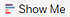
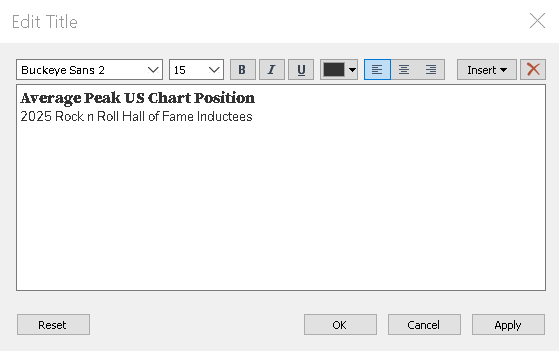
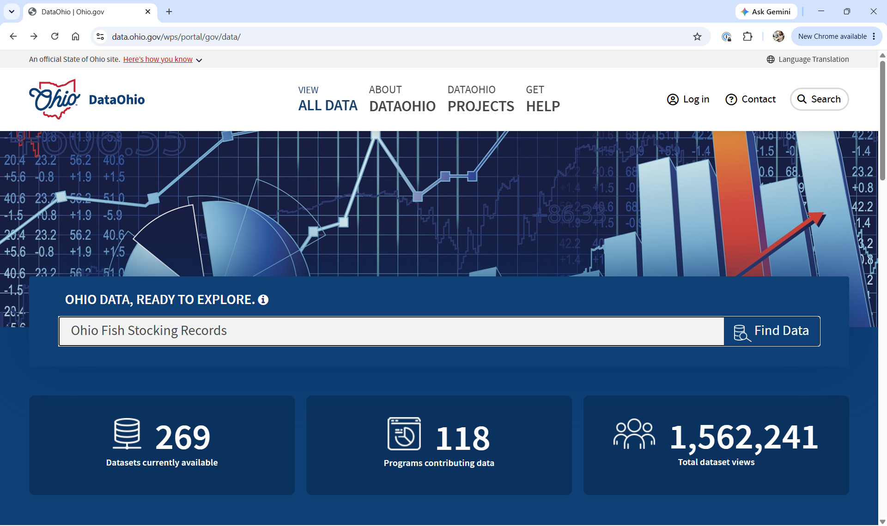
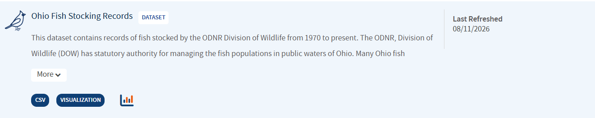
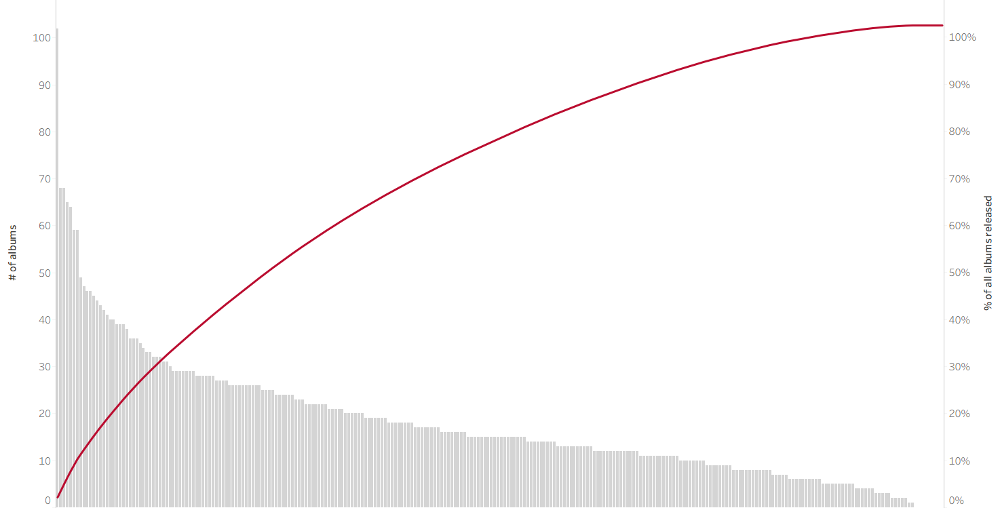

The DRAMA Framework, first introduced on Day 1, is also useful for critically evaluating data visualizations. (Primeau, n.d.)
Date
Is the data current and up to date? Does it reflect current trends?
Relevance
Is the dataset appropriate for your research question, population, and intended use?
Accuracy
Is the data reliable, valid and consistently collected?
Motivation
Why was the data collected, and are there any potential biases or important omissions?
Authority
Who collected the data and are they credible?
Groups and Hierarchies
Why group data in Tableau?
Normalize values – Combine similar entries to ensure consistency (e.g., merging “OH” and “Ohio”).
Correct errors – Fix inconsistencies or typs in category names.
Simplify categories – Consolidate detailed values into braoder, more meaningful groups.
Multiple ways to accomplish a task!!!
Groups are another great example where there is more than one way to accomplish the same task!!!
Exercise 7: Group data
Create a text table showing the peak US chart positions for albums by five of your favorite artists.
1.
Start a new worksheet and rename it:
FavoriteArtistAlbum.
2.
Select the relevant fields
Drag Artist to the Rows shelf.
Place Peak US on the Columns shelf.
3.
Open Show Me and select Text Tables

4.
Select your top 5 favorite artists.
Click on your first favorite artist.
Hold Ctrl + Click to select the others.
5.
Click the paperclip icon 📎 on the tooltip for the last artist selected.
6.
Edit group alias.
Right-click the first artist.
Select Edit Alias.
Rename to Favorite artists.
7.
Right-click Favorite artists and choose:
✔ Keep only.
8.
Adjust fields.
Drag Artist to the Rows shelf.
Drag album_title to the Rows shelf.
Remove Favorite artists from the Rows shelf.
9.
Rename group.
Right-click Artist (group) 1 in the Data Pane.
Select Rename and type Favorite artists.
Exercise 8: Group data
On the FavoriteArtistAlbum sheet, use the Data Pane to group 10 of your Favorite albums into a single group.
1.
Right-click album_title and select:
Create > Group.
2.
Rename the group:
Favorite albums.
3.
Find and add albums to the group.
Click Find >> to search for the first album title.
Under Find members, type the name of your first favorite album title and click Find All.
When the album appears in the list, select it and click Group.
Alias the group Favorite albums.
4.
Repeat the process for each additional album.
Type the album name under Find members, then click Find All.
Select the album.
Use the Add to: dropdown to add each adidtional album to Favorite albums.
5.
✔ Include ‘Other’ to consolidate non-favorite titles.
Creating Custom Hierarchies
Custom hierarchies save space and add interactivity by allowing users to drill down to more detailed levels of data.
Date Hierarchies
When a date field is added to the view, Tableau automatically creates a hierachy —YEAR, QUARTER, MONTH, and DAY. You can expand this hierachy using the + symbol.
Custom Hierarchies
You can create your own hierarchies by stacking one dimension or one measure onto another in the Data Pane.
Applying Formatting in Tableau
Format the entire workbook:
Go to the Format menu and select Workbook. This allows you to apply consistent styles across all sheets.
Format an individual worksheet:
Use the Format pane by selecting Font, Alignment, Shading, Borders, or Lines from the Format toolbar.
Alternatively, right-click on a pill and choose Format.
Exercise 9: Format BarChart1
To prepare BarChart1 as a clear, engaging figure for an academic paper, follow these steps:
1.
Ensure full visibility of Artist names on the X-axis
Hover over the X-axis line until the ↕ (up-down arrow) appears.
Click and drag the line upward to increase the height of the axis area.
Hover over the right edge of the Artist name Bad Company until the ↔︎ (left-right arrow) appears.
Click and drag to the right to expand the column header, ensuring the full name is visible.
2.
Adjust bar width
On the Marks Card click Size
Drag the slider to the left to decrease the width of the horizontal bars.
3.
Remove rudundant field label
Since the artist names are already shown in the column headers, the field label is unecessary.
Right-click Artist in view and select Hide Field Labels for Columns
4.
Remove unnecessary lines
From the Format toolbar, select Lines.
In the Formatting Pane, go to the Rows tab and set Grid Lines to None.
Switch to the Sheet tab and set Axis Rulers and Zero Lines to None.
5.
Customize Y-Axis Label and Tick Marks
Right-click on Y-Axis and select Edit Axis.
Rename the axis title to Peak US Chart Position (Average).
Click the Tick Marks tab, set Major Tick Marks to Fixed and define the interval as 15.
Close the dialog.
6.
Experiment with removing Y-Axis
Copy AVG(Peak US) to Label on Marks Card.
Click Format on the AVG(Peak US) pill to open the Formatting Pane.
Under the Pane tab, set Numbers to Number (Custom) and reduce decimal places to 0.
Right-click the Y-axis and uncheck Show Header to hide it.
To restore: click the ▼ caret on the AVG(Peak US) pill and select Show Header.
7.
Adjust font for clarity
In the Formatting Pane, select Font.
From the Fields ▼ dropdown, choose AVG(Peak US) and …
Increase the font size from 9pt to 12pt.
Match font color to the bar color and apply Bold
Then select Artist from the same dropdown and set the default font color to match the bar color.
8.
Add a descriptive title
Double click the worksheet title Barchart1.
On the first line enter: Average Peak US Chart Position
On the second line enter: 2025 Rock n Roll Hall of Fame Inductees
Adjust font sizes and styling as needed

9.
Add a Zero Line
From the Format toolbar, select Lines.
On the Rows tab, set a solid, thick, dark gray zero line.
10.
Export the visualization for publication
Go to the Worksheet toolbar and select Export > Image.
Uncheck all options except Title and View.
Save the image as Scalable Vector Graphics (*.svg) for high-quality print use.
Table Calculations
Table caculations enhance Tableau’s performance and efficiency by limiting the scope of computation to what’s displayed in the view, rather than the entire dataset.
Common Table Calculations
Running Total
Difference
Percent Difference
Percent of Total
Rank
Percentile
Moving Average
Year-to-Date (YTD) Total
Compound Growth Rate
Year-over-Year (YoY) Growth
YTD Growth
Data Ohio

Ohio Fish Stocking Records

Ohio considers data a shared strategic asset. The resource is designed to help anglers:
Identify fishing locations where specific species have been stocked.
Explore detailed stocking histories for waters they frequently fish or are particularly interested in.
Table calculations
Let’s walk through a few table calculation examples using the ODNR_fish_stocking.csv dataset.
Data visualization experts often discourage using pie charts because humans struggle to accurately compare angles and areas.
There are situations, however, where a pie chart may be appropriate—such as when the audience expects it or when it provides a clear and immediate visual impact.
Let’s return to our rock_n_roll_performers.csv dataset to explore the pie chart.
Exercise 10: Donut Chart
Create Donut Chart showing the number of albums released by 2025 Rock N Roll Hall of Fame inductees.
1.
Duplicate the existing sheet
Right-click on PieChart and select Duplicate.
Rename the new sheet DonutChart.
2.
Create a calculated field
Double click on the Rows shelf and type avg(0).
It doesn’t really matter whether you use average, minimum, or maximum. Tableau requires aggregated measures, and the average of zero is always zero.
3.
Duplicate this calculation
Hold Ctrl (or Option on Mac) and drag AGG(avg(0)) to the right to duplicate the pill on the Rows shelf.
Notice there are now 2 pie charts and a separate marks card for each chart.
4.
Format Marks Card
On the Marks Card labeled AGG(avg(0)) (2):
Click the dropdown next to Automatic and select Circle.
Remove Artist, CNT(rock_n_roll_studio_albums.csv) from color, size, and label.
Click on Color:
Change color to White.
Add a dark gray border.
5.
Create a Dual Axis
On the second AGG(avg(0)) pill, click the ▼ caret and select Dual Axis.
6.
Adjust size
On the Marks Card labeled AGG(avg(0)):
Click Size
Drag the slider to the right to increase the size of the colored pie chart.
On the Marks Card labeled AGG(avg(0)) (2):
Drag the slider to the right to increase the size of the white circle.
7.
Adjust formatting
Remove unnecessary lines:
From the Format toolbar, select Lines.
On the Rows tab:
Set Zero Lines to None.
Remove borders:
From the Formatting Pane, select Borders.
On the Sheet tab, set:
Row Divider to None on Pane.
Column Divider to None on Pane.
Remove headers
Right-click the left avg(0) axis and uncheck Show Header.
Exercise 11: Tree Map
Quickly convert the Donut Chart created in Exercise 10 to a Tree Map
1.
Duplicate the existing sheet
Right-click on DonutChart and select Duplicate
Rename the new sheet TreeMap
2.
Open Show Me and select Treemaps
3.
On the Marks Card
Copy Artist to Color.
Copy CNT(rock_n_roll_studio_albums.csv) to Label
4.
Add a Percent of Total Table Calculation
Click the ▼ caret on the CNT(rock_n_roll_studio_albums.csv) pill assigned to Label
Hover over Quick Table Calculation ► and select Percent of Total
5.
Update title
Double click the worksheet title
Enter:
Percentage of total albums released by 2025 inductees
Dual-axis Combination Chart
Dual-axis chart
A dual-axis combination chart lets you display two different data fields on the same graph, either to save space or to highlight comparisons more effectively. You can also enhance your visual analysis by layering multiple mark types (like bars and lines) in a single view.
Let’s dive back into our rock_n_roll_performers dataset to create a dual-axis chart that highlights our favorite albums and their peak U.S. chart positions.
Pareto Chart
Pareto charts illustrate the Pareto Principle, which suggests that roughly 80% of outcomes result from 20% of causes. In Tableau, these charts are built using table calculations. Individual values are displayed as bars in descending order, while a cumulative percentage line overlays the bars to show the proportion each category contributes to the total.

Pareto chart
Create a Pareto Chart showing the cumulative percentage of album titles of all inductees into the Rock N Roll Hall of Fame
Calculated fields
Calculated fields empower you to transform your data directly within Tableau. You can use calculated fields to:
Clean and organize data,
Define custom segments,
Add interactivity, or
Perform statistical and mathematical calculations.
Calculated fields
Calculated fields
Let’s take a closer look at how calculated fields work by analyzing RIAA certifications for our favorite albums.
Over time, the Recording Industry Association of America (RIAA) has updated its certification standards to reflect changes in how music is consumed. Originally based solely on album sales, certifications now account for digital downloads and streaming activity.
RIAA Certification Levels
To keep things simple, we’ll use the current criteria for album-level awards, as defined by the RIAA in February 2016 to categorize albums by their certification level based on total units.
🎵 RIAA Certification Levels
Gold: 500,000 units
Platinum: 1,000,000 units
Multi-Platinum: 2,000,000+ units (in 1,000,000-unit increments)
Diamond: 10,000,000 units
💽 What Counts as a Unit? A single unit can be any of the following:
One full digital or physical album sale
10 track downloads from the same album
1,500 on-demand audio or video streams from the album
Example
if [Certification Riaa Status]='Gold' then 500000elseif [Certification Riaa Status]='Platinum' then 1000000elseif [Certification Riaa Status]='Multiplatinum' then 2000000elseif [Certification Riaa Status]='Diamond' then 10000000end
Parameters
In Tableau, parameters:
Replace constant values such as numbers, dates, or text strings in calculations, filters, or reference lines, making your dashboards more flexible and dynamic.
Enhance interactivity by allowing users to control what data is displayed or how it’s calculated, depending on how the parameter is integrated into the view.
Parameters
Parameters
Let’s take our CalculatedFields text table and transform it into a bar chart. Then we will create a parameter to highlight specific albums.
Example
[Certification Riaa Status]=[Highlight album]# This expression returns True for albums that match the selected certification in the parameter.
Tip - Parameters
There are countless creative ways to use parameters with calculated fields in Tableau. You can:
Highlight or filter specific data
Add weights or thresholds
Dynamically control reference lines
Switch between metrics or dimensions
And much more!
Basic Mapping
Basic mapping
The ODNR_fish_stocking.csv dataset includes latitude and longitude for each stocking location. Let’s turn this data into a meaningful map.
Dashboards
Creating effective dashboards is both an art and a science and is a skill that develops with time, experience, and thoughtful practice. Great dashboards are tailored to a specific audience, provide clear context and guidance, encourage interaction, and follow visual best practices.
Considerations
Before designing a dashbaord, pause and consider your audience. A highly detailed, data-dense dashboard might be perfect for one group but overwhelming for another. Others may need narrative context embedded in each view. Ask yourself:
What is the primary goal of this dashboard?
How will it be used?
What questions should it help answer?
How will it support decision-making?
Dashboards
Let’s build a dashboard that compares the highest Peak US chart position of albums released by each 2025 Rock and Roll Hall of Fame inductee with all albums released by your favorite artist. This dashboard will include three key views:

 Table calculations
Table calculations